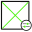

Vue d’ensemble
Pimp My BIM est un add-in Autodesk Revit organisé en modules spécialisés pour l’audit de maquette, la coordination, la qualité des données, la gestion du modèle, la productivité et la préparation des livrables.
Les commandes sont regroupées dans l’onglet Pimp My BIM du ruban Revit. Plusieurs outils disposent également de panneaux dockables afin de conserver les informations utiles directement dans l’environnement de travail.
Installation
Pimp My BIM est distribué sous forme d’add-in Autodesk Revit pour Windows 64 bits. Le package installe les composants correspondant aux versions Revit prises en charge et le plugin est chargé automatiquement au démarrage de Revit.
BIM Health
BIM Health consolide les indicateurs essentiels d’une maquette Revit dans un tableau de bord unique : avertissements, poids du fichier, vues, feuilles, niveaux, liens, familles, paramètres et contrôles MEP.
Lecture du modèle
Les KPI permettent de repérer rapidement les dérives de production et les points nécessitant une action avant coordination ou livraison. Les résultats détaillés et les warnings complètent la synthèse pour faciliter le diagnostic.

PMB Issues / BCF
PMB Issues gère les sujets de coordination BCF directement depuis Revit. Chaque issue peut conserver son contexte visuel, son viewpoint, sa capture et les informations nécessaires au suivi.

Parameter Fill Rate
Parameter Fill Rate mesure la complétude des paramètres par catégorie, famille et type afin d’identifier immédiatement les champs renseignés, partiellement renseignés ou vides.
Audit de complétude
Le contrôle distingue paramètres d’instance et de type et permet de cibler les paramètres partagés. Il est particulièrement utile pour vérifier les exigences informationnelles avant une extraction de données ou une livraison.

Model Insights
Model Insights fournit une lecture synthétique du contenu du projet Revit à travers des KPI, les principales catégories, les familles les plus représentées et des statistiques documentaires.
Analyse rapide du contenu
Le dashboard complète BIM Health par une lecture orientée composition du modèle. Les résultats peuvent être exportés en CSV pour exploitation complémentaire.
Parameter Mapping
Parameter Mapping analyse les paramètres disponibles sur les éléments puis permet d’associer une ou plusieurs sources à un paramètre cible. Une prévisualisation permet de contrôler les valeurs avant transfert.

PMB Live
PMB Live est un panneau dockable synchronisé avec la sélection Revit. Il fournit un retour contextuel immédiat sur les éléments sélectionnés sans multiplier les boîtes de dialogue.

Activity Tracker
Activity Tracker centralise l’activité des commandes PMB et les principaux événements Revit afin de fournir une lecture temporelle de l’utilisation du plugin et des projets manipulés.
Pimp My Links
Pimp My Links centralise l’audit des références externes du projet : liens Revit, liens IFC ainsi que liens et imports DWG.
Gestion centralisée
La liste, les filtres et les actions de gestion permettent d’identifier rapidement la nature et l’état des références sans parcourir plusieurs interfaces Revit.

Shared Params Manager
Shared Params Manager centralise les paramètres partagés, leurs définitions et leurs liaisons au projet afin de faciliter le déploiement et le contrôle d’un référentiel de paramètres.

Parameter Manager
Parameter Manager crée et gère en masse les paramètres liés au projet avec sélection des catégories, type de paramètre, liaison instance ou type, groupe et validation avant application.

Pimp My IFC
Pimp My IFC analyse catégories, familles et types Revit afin d’assister la préparation de la classification IFC et du Predefined Type avant export.
Classification contrôlée
Les propositions sont présentées à l’utilisateur avant application afin de conserver une validation explicite des mappings IFC.

PMB Coordinates
PMB Coordinates calcule et exploite les coordonnées d’éléments selon plusieurs référentiels Revit : système interne, Project Base Point, coordonnées partagées et coordonnées géographiques WGS84.

Data Manager
Data Manager fournit une interface dédiée à l’extraction, à la lecture et au contrôle des données BIM du document actif. Il permet de travailler sur les informations du modèle depuis une vue structurée plutôt que directement élément par élément.

Level Manager
Level Manager regroupe les informations utiles à l’audit des niveaux du projet et des éléments qui leur sont associés. L’outil facilite l’identification des incohérences de structuration verticale dans les maquettes complexes.


Room / Space Manager
Room / Space Manager analyse les pièces et espaces du modèle hôte ou des liens Revit, identifie les éléments associés et permet d’exploiter ou propager les informations spatiales vers le modèle.

View Manager
View Manager centralise les vues du projet, leur filtrage et les opérations en masse afin d’accélérer la gestion de projets contenant un grand nombre de vues.

Sheets Manager
Sheets Manager fournit une vue de gestion compacte des feuilles Revit avec recherche, sélection multiple et opérations en masse adaptées aux jeux de livrables importants.

Workset Manager
Workset Manager regroupe les opérations de gestion des sous-projets afin de traiter efficacement les modèles collaboratifs et d’éviter les manipulations répétitives dans les interfaces natives.

Reference Planes Manager
Reference Planes Manager liste les plans de référence et les éléments rattachés afin de diagnostiquer les dépendances et contraintes difficiles à identifier directement dans la maquette.

Submit Cleaner
Submit Cleaner prépare la maquette avant livraison en identifiant les feuilles incomplètes, vues non placées, légendes ou nomenclatures orphelines, gabarits de vue et filtres inutilisés.

Family Cleaner
Family Cleaner contrôle et nettoie les familles Revit chargées ou stockées dans un dossier RFA. Le dry-run, les listes d’inclusion/exclusion et le journal CSV permettent de vérifier l’impact avant traitement.

Family Renamer
Family Renamer applique des règles de renommage aux familles du projet avec prévisualisation du résultat avant validation. Les opérations comprennent notamment remplacement de chaîne, préfixe et suffixe.

Bulk Family Save
Bulk Family Save traite et sauvegarde en série les familles du projet afin de réduire les opérations répétitives lorsqu’un ensemble de familles doit être extrait ou archivé.

Advanced Selection
Advanced Selection étend la sélection native de Revit avec des filtres ciblés et des sélections réutilisables pour travailler efficacement sur de grands ensembles d’objets.

Transfer Single
Transfer Single copie un élément du document actif vers un autre document Revit ouvert. Le workflow gère la sélection du projet cible et les conflits de types lors du transfert.

Microimplantation
Microimplantation automatise l’implantation d’un ensemble de familles dans une pièce cible à partir des familles/types sélectionnés, d’une hauteur et d’offsets XY.

Room Hatch Pro
Room Hatch Pro génère des régions remplies à partir des pièces sélectionnées du modèle hôte ou des liens Revit. L’outil propose un contrôle de l’offset, le traitement multi-liens et une prévisualisation avant application.

Codification Manager
Codification Manager structure et applique les règles de codification BIM depuis une interface dédiée. Les profils et contrôles permettent d’industrialiser les conventions de données utilisées sur les projets.

Plateforme IFC
PMB IFC Platform complète le plugin Revit avec un environnement dédié aux projets et fichiers IFC : visualisation 3D, exploration des classes et propriétés, profils de contrôle, analyses, historique et suivi des issues.
Moteur de règles IFC
Le moteur de contrôle cible les classes IFC, attributs, Property Sets et propriétés. Les règles peuvent vérifier la présence des données, les valeurs autorisées ou interdites, les expressions régulières, les doublons et les seuils numériques. Les résultats sont classés par sévérité afin de prioriser les corrections.